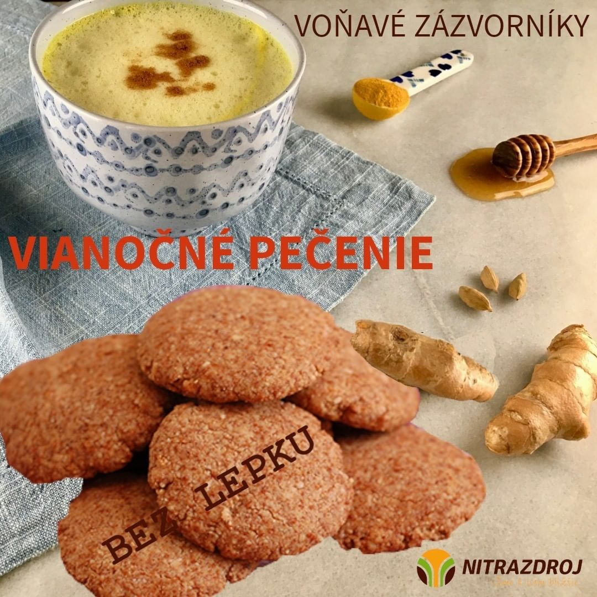

Zázvorníky podľa @nitrazdroj — Normy Jedál
Zdravé bezlepkové zázvorníky. Na 12 kúskov potrebujeme: 1 hrnček mandľovej múky, 2 ČL čerstvo nastrúhaného zázvoru, 2 PL kokosového cukru, 3 PL roztopeného kokosového oleja, 1 ČL škorice, ½ ČL prášku do pečiva, ¼ ČL jedlej sódy, ¼ ČL mletého muškátového orecha, štipka mletých klinčekov. Všetky ingrediencie okrem kokosového oleja dobre zmiešame, potom pridáme aj kokosový olej a vymiešame cesto. Vytvoríme guličky, ktoré sploštíme do tvaru placky. Pečieme na plechu vystlanom papierom na pečenie, pri teplote 180 stupňov približne 8 až 10 minút. #Nitrazdroj #Kvalitajekvamblizsie #vzdynieconove #vianocnepecenie #zazvorniky #bezlepkove